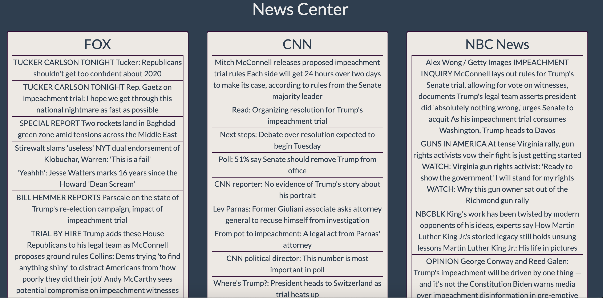

News Center
Web Scraping app that compares the current headlines from top news websites
Skills utilized: Python, Flask, Selenium, React, SQLite
- React-based app shows current headlines scraped from home pages of CNN, Fox, NBC, Huffington Post, and NYTimes
- Headlines act as links to the articles they reference
- Data is obtained from custom built Flask API and SQLite database (https://github.com/parfittchris/newsCenterBackend)
- Webscraping is done via a Selenium script executred asynchronously every 3 hours to keep headlines current
